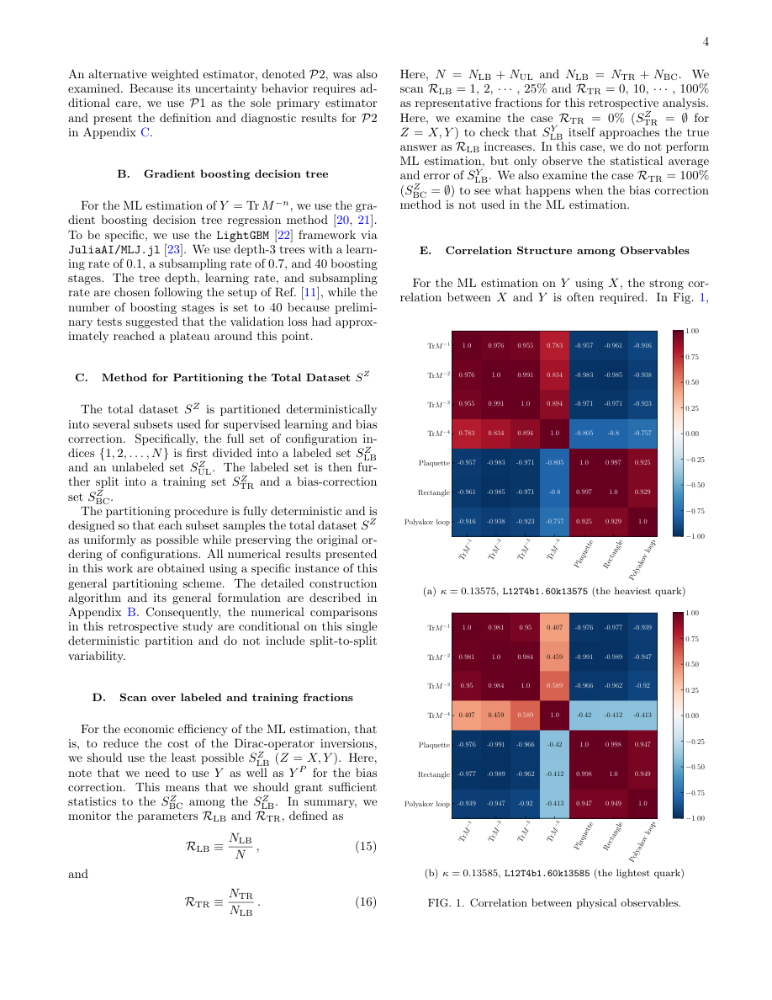

#1
★ 8/10
Bias-Corrected Machine-Learning Estimation of Chiral Condensate Cumulants: A Retrospective Lattice QCD Case Study
Bias-Corrected Machine-Learning Estimation of Chiral Condensate Cumulants: A Retrospective Lattice QCD Case Study

图 Figure · Page 4 of paper
🎯 （AI 中文深度分析暂不可用：Anthropic API 额度不足。英文栏为论文原文摘要，下方链接均可正常访问。）
We present a retrospective case study of bias-corrected machine learning (ML) estimates of traces of the inverse Dirac operator, $\text{Tr}\,M^{-n}$ ($n=1,2,3,4$), using a fixed lattice QCD dataset and examining how the results depend on…
| 维度 | 中文 | English |
|---|---|---|
| ❓ 待解决 的问题 |
（AI 中文深度分析暂不可用：Anthropic API 额度不足。英文栏为论文原文摘要，下方链接均可正常访问。） | We present a retrospective case study of bias-corrected machine learning (ML) estimates of traces of the inverse Dirac operator, $\text{Tr}\,M^{-n}$ ($n=1,2,3,4$), using a fixed lattice QCD dataset and examining how the results depend on the relative proportions of the labeled and training sets. Two supervised learning approaches are examined: one using $\text{Tr}\,M^{-1}$ as the input feature, and the other employing gauge observables such as the plaquette and rectangle. Beyond the direct estimation of $\text{Tr}\,M^{-n}$, we further investigate two derived applications of the ML estimations: the evaluation of the cumulants of the chiral condensate within a single ensemble and that obtained through multi-ensemble reweighting across ensembles with different quark masses. Within this fixed dataset, the bias-corrected estimates show close agreement with the full-data reference under the adopted evaluation criteria, while the uncorrected estimates can exhibit amplified deviations after the nonlinear cumulant and reweighting steps. For the approach using $\text{Tr}\,M^{-1}$ as the input feature, nominal solve-count accounting suggests that the Dirac-inversion cost could be reduced to approximately $25.75\%$ of that of the conventional calculation in the present setup. This value is a cost projection rather than an end-to-end benchmark: it assumes comparable costs for successive inversions and excludes model-training and analysis overhead. |
| 💡 解决 的亮点 |
（AI 中文深度分析暂不可用：Anthropic API 额度不足。英文栏为论文原文摘要，下方链接均可正常访问。） | See the paper’s original abstract in the "Problem / 背景" row above. |
| 🧪 实验 内容 |
（AI 中文深度分析暂不可用：Anthropic API 额度不足。英文栏为论文原文摘要，下方链接均可正常访问。） | See the paper’s original abstract in the "Problem / 背景" row above. |
| 📊 实验 结果 |
（AI 中文深度分析暂不可用：Anthropic API 额度不足。英文栏为论文原文摘要，下方链接均可正常访问。） | See the paper’s original abstract in the "Problem / 背景" row above. |
| 🏁 结论 | （AI 中文深度分析暂不可用：Anthropic API 额度不足。英文栏为论文原文摘要，下方链接均可正常访问。） | See the paper’s original abstract in the "Problem / 背景" row above. |
| 🔗 论文 链接 |
arXiv: 2608.30416v1 · 📥 PDF | |
⚙️ Method · 方法详解
（AI 中文深度分析暂不可用：Anthropic API 额度不足。英文栏为论文原文摘要，下方链接均可正常访问。）
See the paper’s original abstract in the "Problem / 背景" row above.
🌟 Why It Matters · 为什么重要
（AI 中文深度分析暂不可用：Anthropic API 额度不足。英文栏为论文原文摘要，下方链接均可正常访问。）
See the paper’s original abstract in the "Problem / 背景" row above.